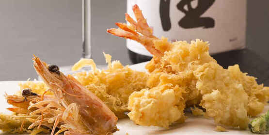

Descubra os Sabores do Koba Izakaya
Em nosso izakaya, você encontrará pratos tradicionais e inovadores da culinária japonesa. Oferecemos uma experiência única de sabores, com um ambiente acolhedor e autêntico, perfeito para qualquer ocasião.
Ver Mais